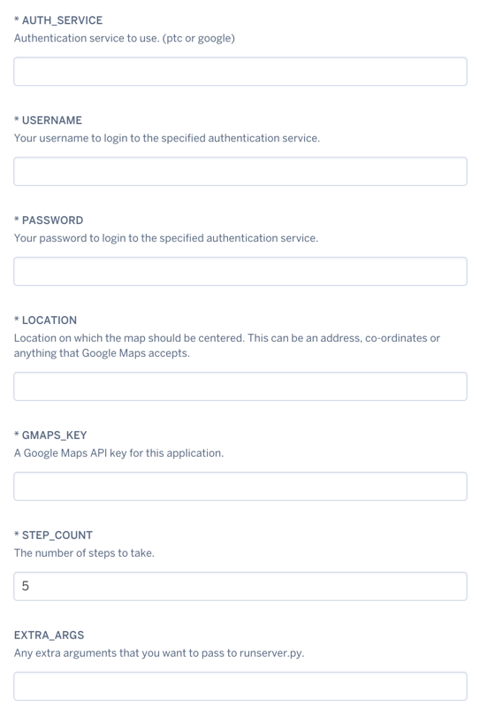
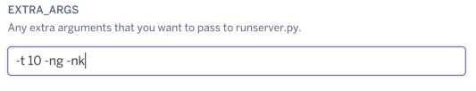
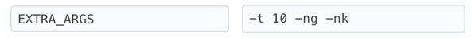

Heroku¶
This project supports deploying a new app to Heroku using the “Deploy to Heroku” button. Clicking this button will walk you through setting up the project on your Heroku account, allowing you to set the various configuration values required to make the project run.

Making use of the EXTRA_ARGS when setting up a Heroku app¶
To enable non-standard configuration options, you’ll want to utilize the EXTRA_ARGS field.
This field accepts any command line configuration parameters defined on the Usage page:
EX: Use 10 threads, Exclude Gyms, Exclude PokéStops: -t 10 -ng -nk

But what if my project has already been deployed?
- Click
Settings>Reveal Config Vars - At the bottom of the list, add a new “KEY” titled
EXTRA_ARGS - The “VALUE” field is where you will add your configuration arguments:
- EX: Use 10 threads, Exclude Gyms, Exclude PokéStops:
-t 10 -ng -nk - 
Manually deploying to Heroku¶
To manually deploy this app to Heroku, perform the following steps:
Get a local copy of the project
git clone https://github.com/AHAAAAAAA/PokemonGo-Map.git`
Create a Heroku app for the project
heroku create insertyourappname`
Set the required configuration parameters for the app, replace with your actual values.
heroku config:set AUTH_SERVICE=insertyourauthservicehere heroku config:set USERNAME=insertyourusernamehere heroku config:set PASSWORD=insertyourpasswordhere heroku config:set LOCATION=insertyourlocationhere heroku config:set STEP_COUNT=insertyourstepcounthere heroku config:set GMAPS_KEY=inseryourgmapskeyhere heroku config:set EXTRA_ARGS=optional_extra_arguments
Push the project develop branch to the master branch on Heroku
git checkout develop git push heroku develop:master
All set, have fun!